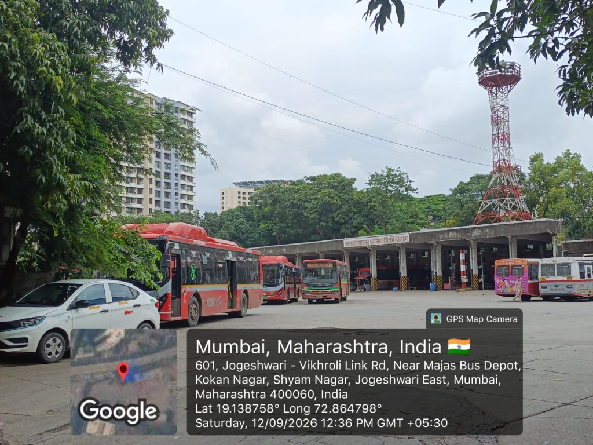
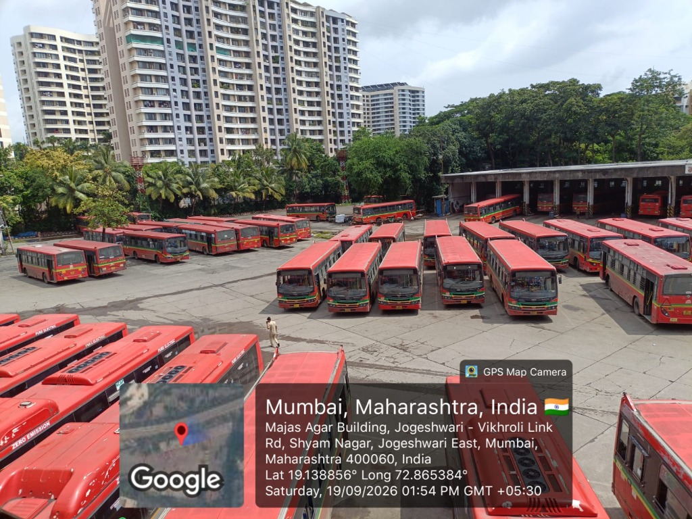
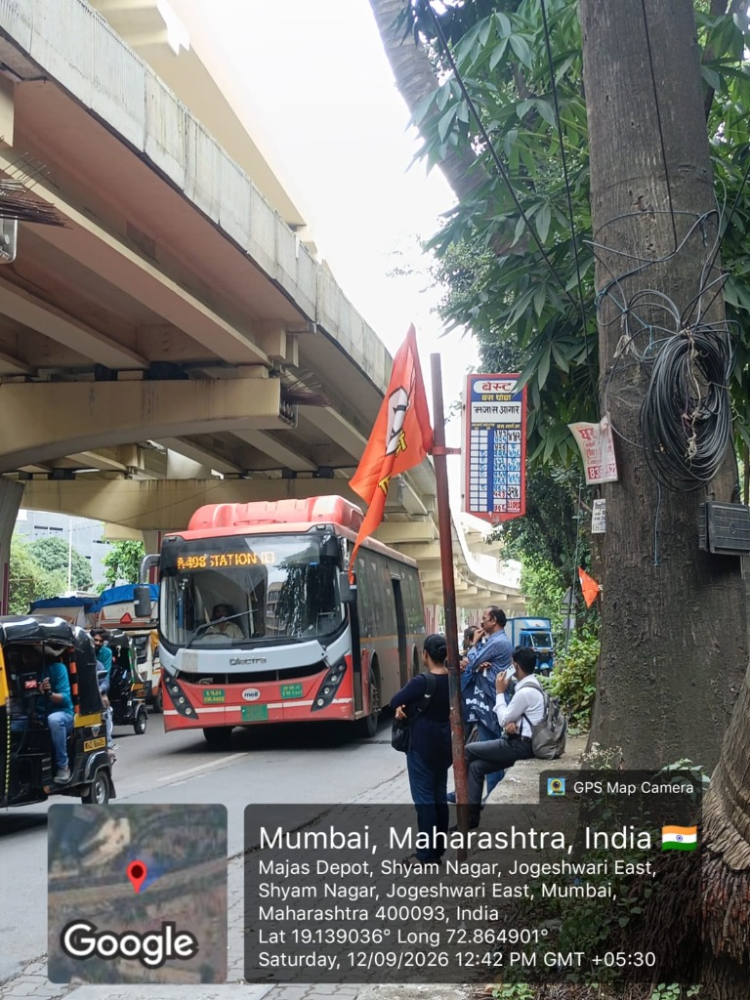
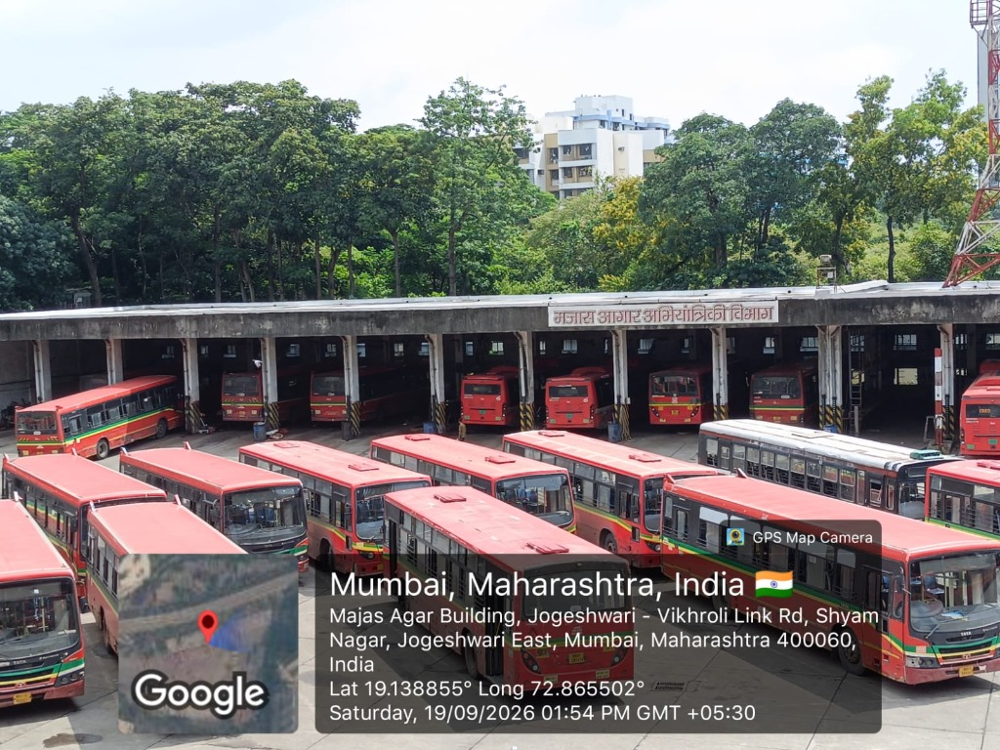
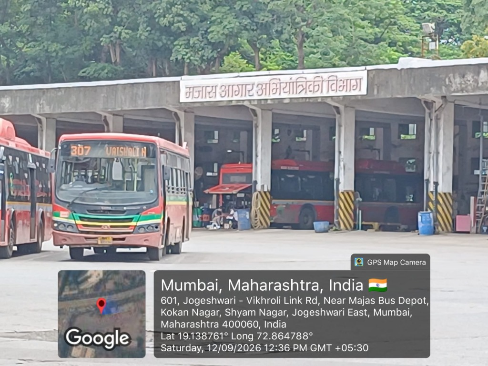
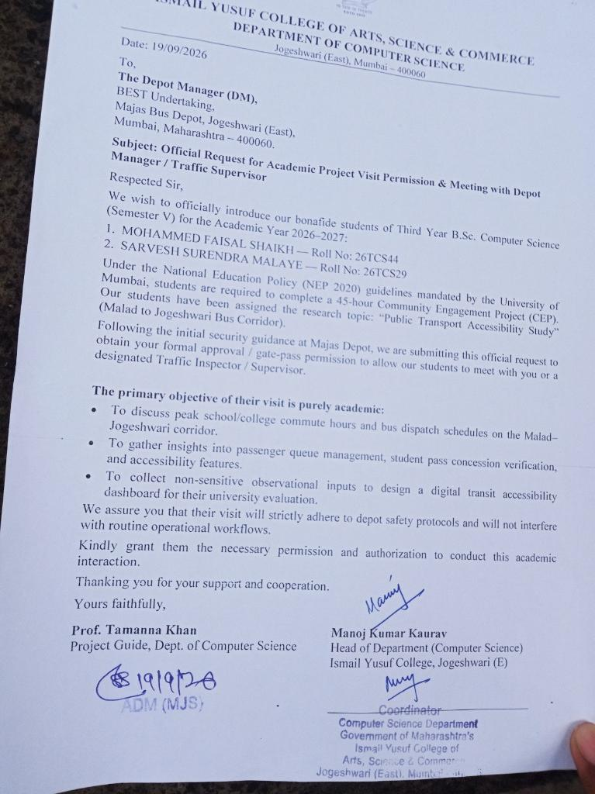
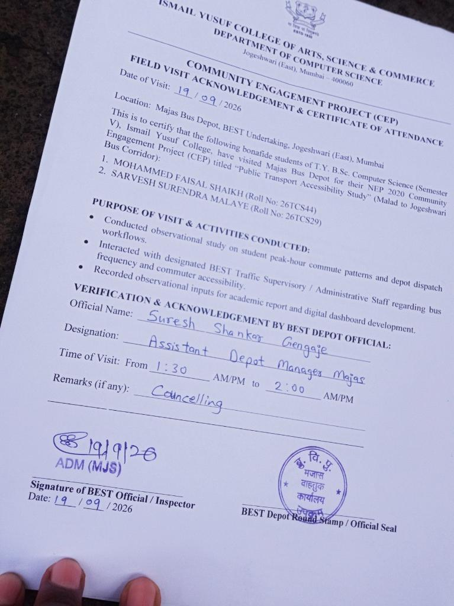

Field Documentation
Visual insights from our on-ground study.





Official Proof of Visit
Academic permissions and formal acknowledgement from BEST Depot officials.


Actionable Recommendations & Policy Insights
Proposed solutions to alleviate commuter stress and optimize depot operations.
Special Student Shuttles
Deploy point-to-point shuttle services linking major railway stations directly to educational clusters during key college timings (7 AM - 9 AM & 12 PM - 2 PM).
Organized Physical Queues
Install barricades and employ traffic wardens at high-density stops like Ismail Yusuf College to ensure orderly boarding and prevent stampedes.
Dynamic GPS Dispatching
Transition from static schedule-based dispatching to demand-responsive dispatching utilizing real-time GPS fleet tracking and crowd density metrics.
Digital Pass Integration
Mandate and optimize RFID-based digital student passes via the Chalo app to reduce cash transaction times during boarding, speeding up the dwell time at stops.